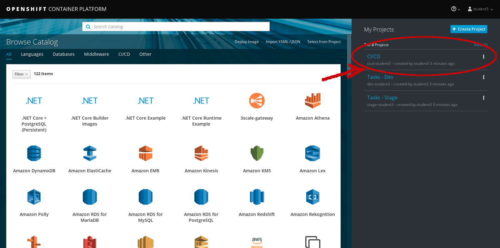
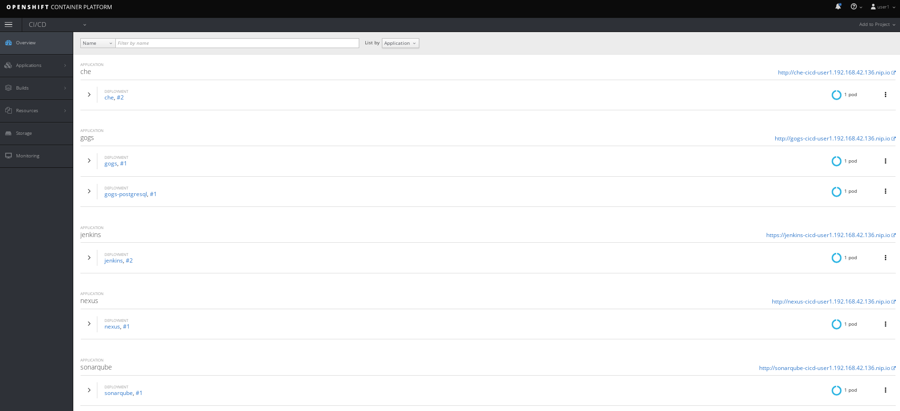
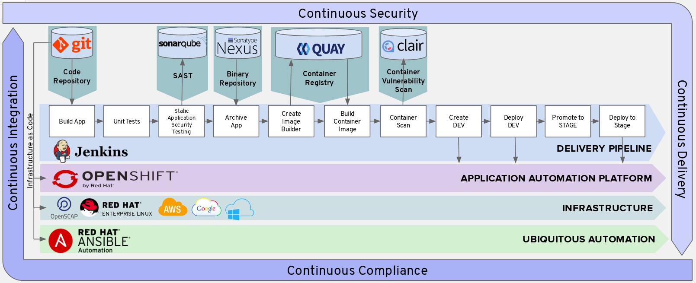

Before moving forward, it is important to understand the difference between Continuous Integration (CI), Continuous Delivery (CD), and Continuous Deployment.
Also, a part of this lab we’ll be using using Pipelines in OpenShift for CI/CD, which gives you control over building, deploying, and promoting your applications on OpenShift. Using a combination of the Jenkins Pipeline Build Strategy, Jenkinsfiles, and the OpenShift Domain Specific Language (DSL) (provided by the OpenShift Jenkins Client Plug-in), you can create advanced build, test, deploy, and promote pipelines for any scenario.
OK, let’s go ahead and start building an OpenShift CI/CD Pipeline using In the OpenShift Console.
First, go to the CI/CD Project to the right.

If the project does not exists, then use the CLI and goto the terminal and type the following:

Once inside the CI/CD Project, you will see the following PODS running. This PODS are all leveraged in building our application.
- Che pod - Eclipse Che is an open source browser based IDE.
- Gogs pod - Gogs is an open source git server written in Go.
- Nexus pod - Nexus is an artifact repository
- Jenkins pod - Jenkins is an open source CI/CD tool
- Sonarqube pod - SonarQube is an open source static code analysis tool
It might take a few minutes for all PODS to be deployed.

The Flow of the Trusted Software Supply Chain
- Jenkins is the CI/CD tool that will execute the project.
- The Code is cloned from Gogs onto the Jenkins Executor Node.
- The Code is built by Jenkins using Maven
- JUnit Test are executed against the source code
- In parallel, the source code is analyzed for vulnerabilities, bugs, and bad patterns by SonarQube
- The WAR artifact is pushed to Nexus Repository manager
- A container image (tasks:latest) is built based on the tasks application WAR artifact deployed on JBoss EAP
- The tasks container image is deployed in a fresh container in DEV project
- The DEV image is tagged with the application version (tasks:7.x) in the STAGE project
- The staged image is deployed in a fresh container into the STAGE project
